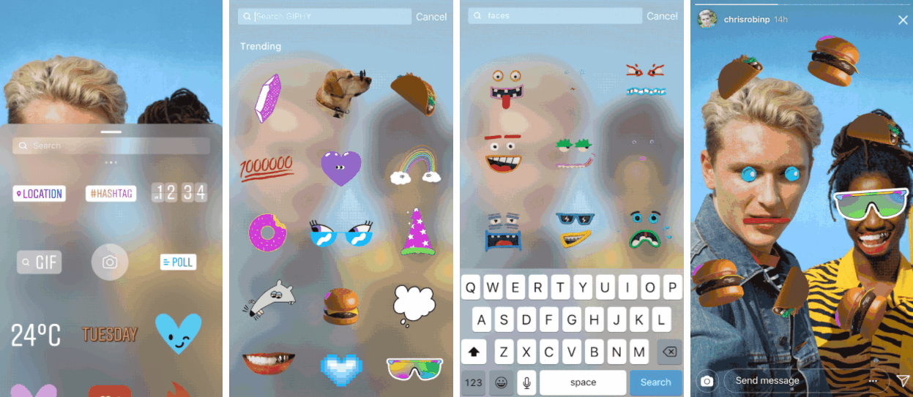
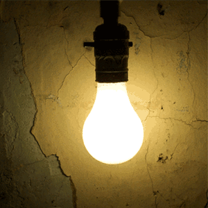
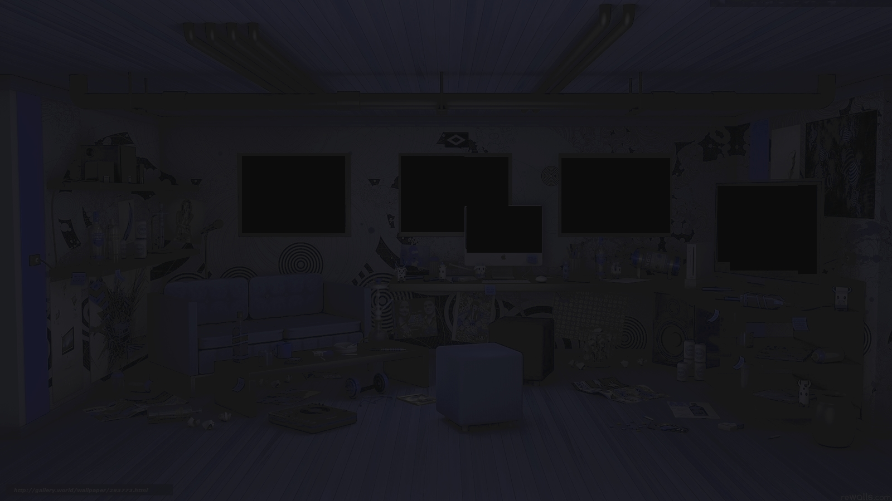

Chacun chez soi, avec notre assistant virtuel.
J’ai fini mes tâches, je déconnecte mon espace de travail.
“Il est 22 heures, votre dîner est prêt.
- Merci Omnia
- Je constate que le niveau de lait est faible. Voulez-vous en commander ?
- Oui.
- Commande validée. Vous avez 30 nouvelles interactions.”
- Je regarderai plus tard”
Plus besoin de sortir, Omnia produit, achete, livre, prépare… Omnia, intelligence artificielle la plus aboutie, contrôle tout pour nous.
Le monde, ma vie sur des écrans.

Plus de complexe, mon physique je le choisi.
Plus de complexe, mon profil je le rempli : paraître avant d’être.

J’avale mon repas, je retourne devant le PC. 30 Nouvelles interactions, 45 relations connectées…. 40… 35… 20… 5… 0…

La lumière clignote… Les écrans se brouillent. Mes appareils s’éteignent les uns après les autres...

Et plus rien… Seulement le silence et l’obscurité… Le temps semble figé, déconnecté… Comme moi…
Plus d’électricité… Cela ne m’est jamais arrivé. Appliquer le protocole de déconnexion.
“S’il n’y pas de danger dehors : Sortir” Trop vaste, trop vide, … Mais je ne sais plus, je suis pas sorti depuis des années... Et si la coupure venait de dehors ? Comment savoir s’il y a danger ?
Je dois rester calme…
Respirer… Respirer... Je dois penser à quelque chose de relaxant... Je dois penser aux images de méditation.
Quel est le protocol déjà ? Rester calme… Rester calme...
J’ai gardé la boite d’urgence dans un tiroire… Je la cherche… Mais où est-elle ? Au fond de celui-ci !
Je l’ouvre. Et je me remémore la formation...

D’abord “Rétablir la lumière”. Je dois avoir une bougie quelque part… Ah, la voilà ! Je craque une allumette, je l’allume. La lumière revient… Faible et fragile, je dois la garder vive… Ne pas la brusquer...
Respirer… Respirer… Mais sans souffler la flamme !